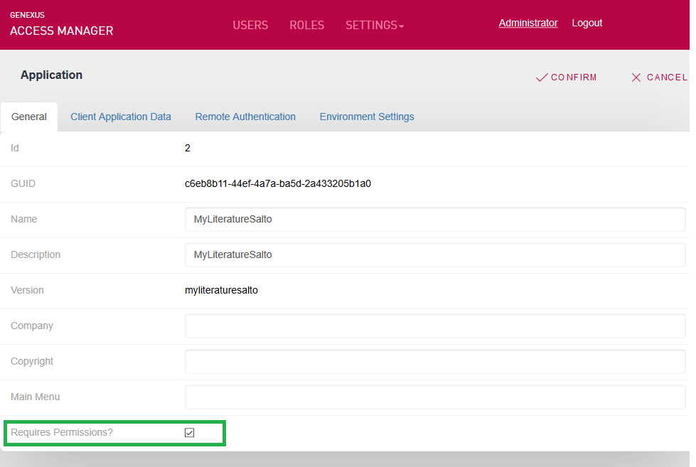
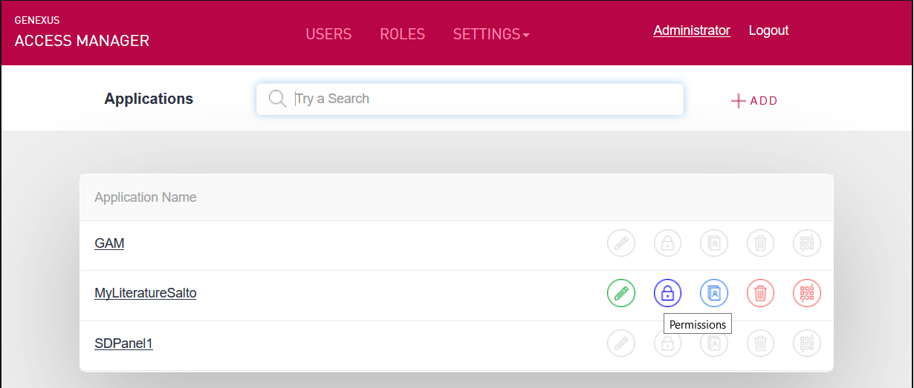
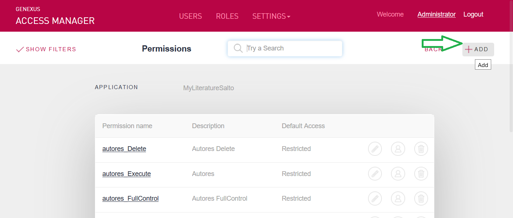
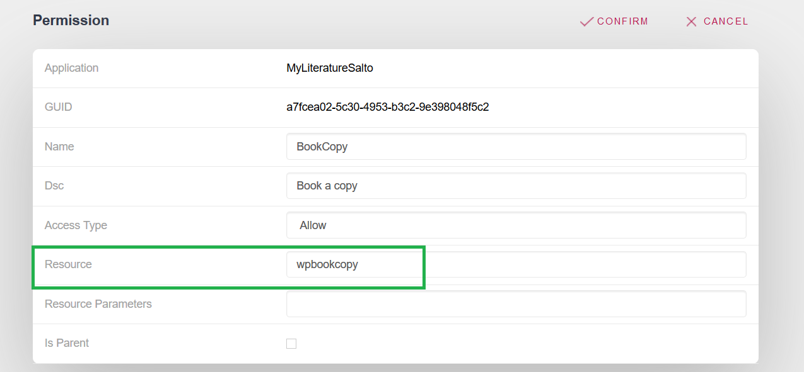

There are two types of Permissions:
In the case of Automatic Permissions (1), GeneXus generates the GAM Permissions in F5; at runtime, it checks if the user has the permission, or if he has a role where the permission is allowed. This happens for those objects that have Integrated Security Level set to "Authorization". So, this property value has to be set for all the objects that are going to generate permissions which are checked at runtime. This document focuses on Permissions created by the user (2). When permissions are going to be created by the user and are used programmatically, the object does not need to have Integrated Security Level set to "Authorization" because "Authentication" is enough. The only prerequisite is that the Requires Access Permissions option of the GAM Application is selected.  Figure 1. "Requires Access Permissions" Repository PropertyExampleThe following is an example where a permission is defined using the GAM Web Backoffice.  Next, click to add a GAM Permission to the Application:  The Permission definition can include, optionally, a resource (any object of the KB with URL access).  The resource parameters can only be constant values. Note: The association of a resource with a permission is done only for the purpose of defining a Menu. This permission is not checked at runtime when this resource is run. Afterwards, you can define a role including this permission (with the corresponding Permission Access Type), or just assign this permission to a user. The following code can be included in any object, which asks if the permission is among the permissions granted to the logged-in user:
&isAuthorized = GAMRepository.CheckPermission("BookCopy")
if &isAuthorized
//Do something
else
//Do Anything else
endif
Note that there's no need to set the Integrated Security Level property to "Authorization", and that "Authentication" is enough. See AlsoGAM Authorization Scenarios
|
| Backlinks |
| Howto: Define a Menu using GAM |